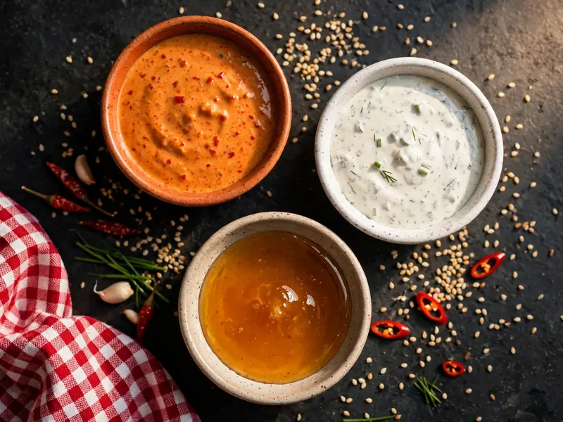

Dave's Hot Chicken Allergen Menu
The Dave's Hot Chicken allergen menu answers one question before any other — and the answer is not in any single row. Inside that warning, the Dave's Hot Chicken allergen menu below is the full picture: the items that contain wheat, milk, egg, soy and sesame, and the drinks that contain none of them. If you or your child has a food allergy, read the warning first and the chart second.
The Warning That Comes First
All equipment and fryers are shared, no item can be prepared separately, and no dish is guaranteed allergen-free. That warning sits at the top of the Dave's Hot Chicken allergen menu for a reason.
Three more rules sit with it. Dishes are not modified to remove allergens, so asking for a build change does not remove an allergen. Full ingredient lists are not provided for menu items, so the allergen chart is the deepest information available. May-contain warnings from suppliers and kitchens are not published either. If food must be guaranteed free of an allergen, the safe answer is not to order. The rest of the chart serves readers whose allergy management allows shared-kitchen risk, and who need the Dave's Hot Chicken allergen information to judge that risk item by item.
Dave's Hot Chicken Allergens Chart
The Dave's Hot Chicken allergen menu as a chart, grouped the way the menu is grouped. "Contains" means the allergen is an ingredient of the item on the published chart; cross-contact from the shared fryers applies to everything on top of this, fried items most of all.
| Item | Contains | Notes |
|---|---|---|
| Tenders, Dave's Bites, Hot Box tenders & bites | Wheat, Egg, Soy | From the breading. A buttermilk marinade would add Milk to the chicken items; milk-sensitive readers should ask in store. |
| Sliders, slider combos & slider Hot Boxes | Wheat, Milk, Egg, Soy, Sesame | The fullest row on the chart: chicken, bun, slaw and sauce together. Bun topping is the sesame source. |
| Cauli Tenders & Cauli Bites | Wheat, Soy | Same breading system as the chicken items. |
| Cauli Sliders | Wheat, Milk, Soy, Sesame | Bun and build add milk and sesame to the cauli base. |
| Fries & Box of Fries | None as ingredients | Still a wheat cross-contact risk: they cook in the shared fryers. Not safe for celiac disease or a wheat allergy. |
| Cheese Fries | Milk | Plus the same shared-fryer cross-contact as plain fries. |
| Top Loaded Fries | Milk, Egg, Soy | Cheese plus loaded sauces; shared-fryer cross-contact applies. |
| Mac & Cheese | Milk, Wheat | The clearest dairy item on the menu after the shakes. |
| Kale Slaw | Egg, Soy | From the dressing. Mustard is also listed for the dressing; treat as possible and ask. |
| Dave's Sauce (all sizes), Reaper Sauce | Egg, Soy | Listed as Egg and Soy. Some chart copies also tick Wheat and Milk; if either matters to you, treat the sauce as containing it and ask in store. |
| Ranch | Milk, Egg | The dairy dip of the menu. |
| Honey Sauce | None of the main allergens | The only sauce row with no main allergen listed on the chart. |
| Plain shakes (chocolate, strawberry, vanilla) | Milk | Ice-cream based; shake station is a cross-contact area. |
| Top-Loaded Shake, Fruity Pebbles | Milk, Wheat | Cereal topping adds the wheat. |
| Top-Loaded Shakes, M&M's & Oreo | Milk, Soy, Wheat | M&M's adds a peanut cross-contact warning on top. |
| Creme slushers | Milk | The creme line only; the frozen slushers below are clear. |
| Frozen slushers & sodas | None of the main allergens | The clearest rows on the whole chart. |
Two chart notes matter. First, the table is the US side of the Dave's Hot Chicken allergen menu. Where chart versions conflict, the conflict is printed in the notes column rather than resolved by guessing, because with allergens a wrong tick is worse than an honest flag. Second, versions drift: the same chart circulates as an allergen menu PDF, and a copy saved in 2025 or earlier is out of date. The current chart and the store's own copy are the versions to work from.
Which Allergens Does Dave's Track?
14 allergens are tracked: celery, cereals containing gluten, crustaceans, egg, fish, lupin, milk, molluscs, mustard, peanuts, sesame, soya, sulphites and tree nuts. Five do most of the work on the Dave's Hot Chicken allergen menu: wheat, milk, egg, soy and sesame.
Mustard deserves its own sentence because it is easy to miss. It sits in the tracked list, it appears against built items like a tender with bread, pickles and sauce, and the kale slaw dressing carries it as well. If mustard is your allergen, the simplified five-column charts are not enough; ask for the full Dave's Hot Chicken allergen menu in store before ordering anything with sauce or dressing on it.
Fish, shellfish (crustaceans and molluscs), celery, lupin, sulphites and tree nuts are tracked but do not appear as ingredients in the core menu items. They remain on the tracked list because the kitchen is shared and because toppings and limited items change; tracked is not the same as present, and neither word means guaranteed absent.
Allergen by Allergen: Where Each One Hides
The Dave's Hot Chicken allergen menu, allergen by allergen: where each one sits, which items carry it, and what it removes from the order.
Wheat and gluten
Wheat is in the breading, which means it is in every tender, bite, slider and cauliflower item before anything else is added, and no dish is gluten free. With a gluten allergy or celiac disease, the shared fryers close the remaining door: even the fries, which carry no wheat ingredient, cook in oil shared with breaded items. Our gluten free guide works through what that leaves, which is very little.
Milk and dairy
Milk runs through the slider build, the mac and cheese, the cheese fries and loaded fries, the ranch and every shake and creme slusher. With a dairy allergy, the cleanest items on the chart are the frozen slushers and sodas, the honey sauce, and, on the ingredient rows, the fries, with the shared-fryer warning attached. One open question to ask in store: a buttermilk-based marinade would put milk in the tenders and bites as well; the chart rows do not list it, so treat the chicken items as unconfirmed for milk until the store answers.
Egg
Egg is in the breaded chicken items, the kale slaw dressing and Dave's Sauce itself, which is built on a mayonnaise-style base. Egg is the allergen that removes the signature sauce from the meal, not just the chicken.

Soy
Soy is the quietest row on the chart and one of the widest: breaded items, cauliflower items, the slaw dressing, Dave's Sauce and the Oreo shake build all carry it. A soy allergy at Dave's leaves mainly the drinks case and the honey sauce.
Sesame
Sesame arrives with the slider buns, so it is in every slider, slider combo and cauli slider, and in nothing else as an ingredient: tenders and bites carry no sesame row. That split is the one useful piece of good news in the Dave's Hot Chicken allergen menu for a sesame allergy, and it still comes with the shared-prep warning over the whole kitchen.
Peanut and tree nuts
No menu item is built on nuts, and the M&M's shake topping is the one nut flag on the chart, a peanut cross-contact risk rather than an ingredient. With a nut allergy, the shakes station is the area to avoid entirely; the core chicken menu carries no nut ingredients, under the same shared-kitchen warning as everything else.
Does Dave's Use Peanut Oil?
No. The fryers run on a soybean and vegetable oil blend, not peanut oil. No oil specification is printed in the allergen guide.
Oil suppliers can change, so a peanut-allergic reader should still confirm the current oil with the store before a first order. And on the Dave's Hot Chicken allergen menu, peanut oil is not the main peanut risk anyway: the M&M's shake topping and the shared kitchen are.
Ordering With an Allergy at Dave's
The Dave's Hot Chicken allergen menu routine is simple: tell the restaurant about the allergy before you order, and work from the store's current allergen information, not from any website, including this one.
Inform the staff of the allergy at the start, not at the till. The store has to know before anything is prepared.
Stores hold the current allergen chart, and the store's chart wins wherever it differs. A disagreement is worth a manager conversation.
Dishes cannot be modified to remove allergens. A slider without sauce is a preference, not an allergen control.
If a dish has to be guaranteed allergen-free, no such guarantee exists, and the safe move is not to order.
Note: the kitchen policies, the tracked-allergen list and the no-guarantee position are fixed; the item chart is the US half of the Dave's Hot Chicken allergen menu, with its known variations flagged in the table. For the same menu read by calories and macros instead, the nutrition chart is the companion page, and the halal guide covers the other big dietary question.
Frequently Asked Questions
What allergens are in Dave's Hot Chicken?
On the Dave's Hot Chicken allergen menu, five allergens do nearly all the work: wheat (in every breaded item), milk (slider builds, mac and cheese, shakes, ranch), egg (breading, slaw dressing, Dave's Sauce), soy (breading, sauces, slaw) and sesame (slider buns). 14 allergens are tracked in total, including mustard, peanuts and tree nuts.
Does Dave's Hot Chicken use peanut oil?
No. The fryers run on a soybean and vegetable oil blend, not peanut oil. No oil specification is printed in the allergen guide, so confirm with the store before a first order if peanut is your allergen.
Is Dave's Hot Chicken allergy-friendly?
It is allergy-aware but not allergy-safe. A full allergen chart is published and 14 allergens are tracked, but every fryer and surface is shared, no dish can be modified to remove an allergen, and on the Dave's Hot Chicken allergen menu no dish is guaranteed allergen-free.
Are Dave's fries safe for celiac disease?
No. The fries contain no wheat ingredient, but they are cooked in fryers shared with breaded chicken and cauliflower, and no dish is gluten free. For celiac disease, that cross-contact is the answer, not the ingredient list.
Do Dave's shakes contain nuts?
The plain shakes are milk items with no nut ingredients. The M&M's Top-Loaded Shake carries a peanut cross-contact warning, and the shake station is a shared area, so for a nut allergy the shakes are best skipped entirely.
Are Dave's sauces dairy-free?
Mostly not. Ranch is milk and egg; Dave's Sauce is listed as egg and soy (some chart copies add wheat and milk to it). The honey sauce is the one sauce with no main allergens listed.
Does Dave's Hot Chicken have an allergen menu I can check in store?
Yes. The Dave's Hot Chicken allergen menu is the allergen chart held in store. Ask for it before ordering; the in-store chart is the current version, which no saved PDF or website can promise to be.
More Dave's Guides
Browse the rest of the Dave's guides.